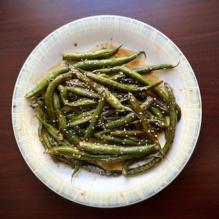

The blend of sweetness, savory garlic, and the rich umami of soy sauce make these green beans the perfect choice for a healthy side dish. It perfectly complements a bowl of steaming rice and your protein of choice. Whether you're in a hurry or simply looking to add more greens to your meal, these green beans are a deliciously satisfying choice.
